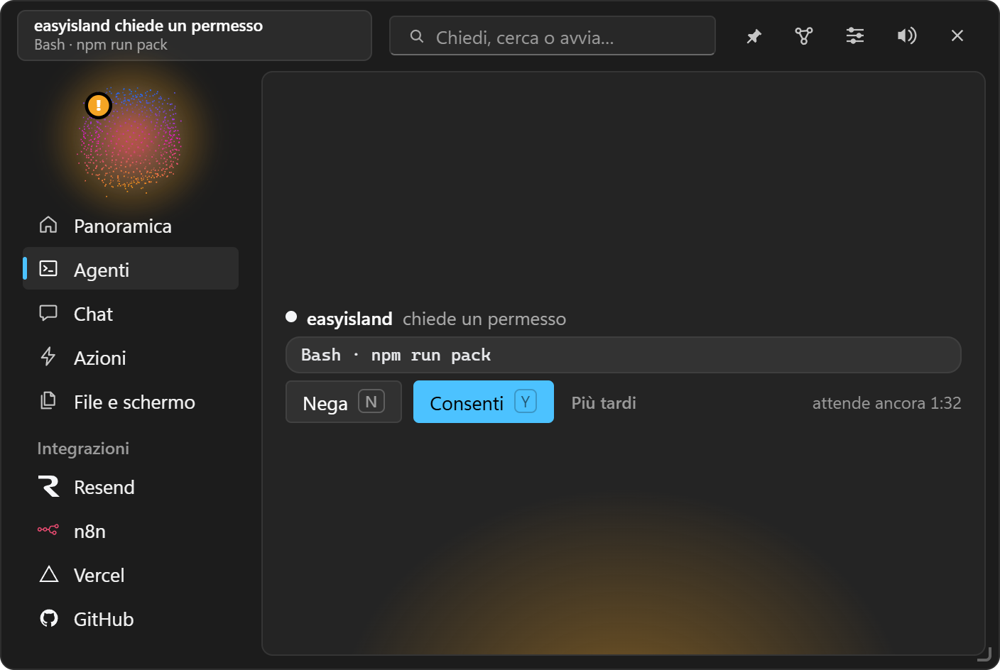
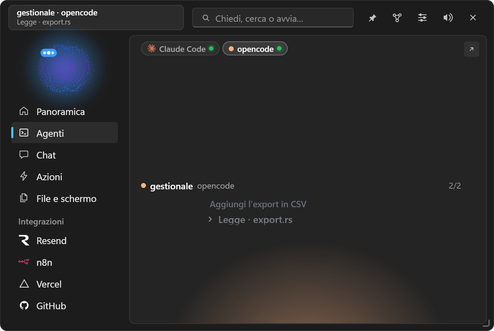
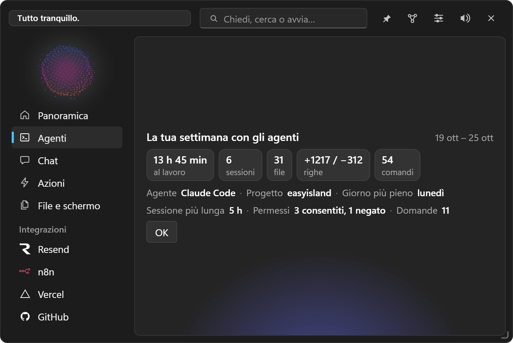

Agenti di codice
Claude Code, Codex, opencode, Antigravity, Gemini CLI, Cursor e Copilot nell'isola: sessioni, permessi, modifiche, riepiloghi.

#Collegare un agente
Impostazioni → Agenti di codice: ogni agente ha la sua riga con Installa… e Disinstalla…. Prima di scrivere vedi:
- il diff esatto di cosa cambierà nel file di configurazione dell'agente;
- il percorso della copia di backup datata che verrà creata.
Niente viene scritto finché non clicchi. I tuoi hook non vengono mai toccati e la disinstallazione toglie solo le voci di EasyIsland.
#Come funziona
L'agente chiama un piccolo programma, easyisland-hook.exe, a ogni evento (inizio, strumento, permesso, fine). Il relay ha 300 ms per raggiungere EasyIsland ed esce in silenzio se l'app è chiusa o lenta: una sessione non viene mai bloccata né rallentata. Se nessuno risponde in tempo a un permesso, l'agente lo chiede nel terminale come al solito.
#Nella scheda Agenti

- Avanzamento e passi della sessione, con lo strumento in uso.
- Modifiche in tempo reale: ogni file modificato con le righe aggiunte (verde) e tolte (rosso). Un clic apre la scheda Modifiche: una linguetta per file, 3 righe di contesto, ↗ per aprire il file in VS Code alla riga giusta. Il diff resta solo in memoria (50 modifiche, un'ora al massimo).
- Permessi con Nega / Consenti / Sempre. «Sempre» usa la regola proposta dall'agente (la card dice quale) o una regola di sola sessione. Più tardi ripiega la card con il tempo rimasto.
- Domande dell'agente con le opzioni come pulsanti e risposta libera.
- Card «finito» con l'ultimo messaggio in markdown e Continua: il testo arriva alla sessione (nel terminale parte subito).
- Chiedi a questa sessione: interroghi una copia in sola lettura della sessione, senza toccare il lavoro vero.
- Apri: riporta in primo piano il terminale, VS Code, Cursor o l'app di Claude della sessione (Ctrl+Alt+Shift+T).
#Gli agenti
| Agente | Cosa arriva all'isola |
|---|---|
| Claude Code | Tutto: sessioni, passi, modifiche, permessi con «Sempre», domande, piani, fine. Anche dall'app desktop di Claude e dal terminale di Cursor |
| Codex | Sessioni e permessi con Consenti / Nega. Dopo l'installazione apri /hooks in Codex e approva gli hook di EasyIsland |
| opencode 2 | Accendi Collega opencode: EasyIsland segue il suo servizio in background senza installare nulla. Permessi con Consenti / Nega / Sempre, anche rispondendo in opencode |
| opencode 1.x | Un plugin scritto da EasyIsland; dopo l'installazione riavvia opencode |
| Antigravity (Google) | Sessioni della CLI agy, dell'IDE e dell'app, con passi e diff; comandi e strumenti MCP con Consenti / Nega. Se non rispondi decide Antigravity |
| Gemini CLI | Sessioni e passi. Gemini non accetta risposte ai permessi da fuori: l'isola ti avvisa e ti riporta al terminale |
| Cursor e GitHub Copilot | Solo in osservazione (sessioni e passi), mai sui permessi |
| Compiti | I compiti di EasyIsland stessa, come sessioni dell'agente «Compiti» (vedi Compiti) |
Altri strumenti: qualsiasi programma può comparire in Agenti mandando eventi a easyisland-hook <Evento> con un campo easyisland_agent (vedi Riga di comando e script).
#Strumenti di EasyIsland in Claude Code
Impostazioni → Agenti di codice → Strumenti di EasyIsland in Claude Code aggiunge il server MCP di EasyIsland a Claude Code per tutti i progetti (dopo una copia datata di .claude.json). Così Claude Code, in qualsiasi progetto, può:
- mostrare una card con pulsanti nell'isola e aspettare la tua scelta (
show_card); - mettere un file nel Vassoio (
add_to_tray); - usare tutti gli strumenti di EasyIsland descritti in Modalità terminale e strumenti.
#Riepiloghi
- Riepilogo del giorno: al mattino (il tempo degli agenti di ieri) e a fine giornata (dall'ora che scegli, 18 di serie), con i repository che hanno file modificati o commit da inviare e le pull request in attesa di revisione (con
gho un token GitHub). - Riepilogo settimanale: il lunedì dalle 8, ore al lavoro, sessioni, file e righe cambiati, comandi, permessi. Anche dal menu dell'area di notifica.
Tengono solo numeri e il nome della cartella del progetto, mai comandi o contenuti.

#Limiti del piano Claude
Con un piano Pro o Max, la card Consumo Claude mostra le percentuali delle 5 ore, della settimana e della settimana Opus, con un avviso dall'80 %, e le riporta in alto nell'isola. Le chiede ad Anthropic ogni 5 minuti con l'accesso già fatto in Claude Code (lo stesso dato di /usage, solo letto) e le prende anche dalla status line delle sessioni. La card mostra anche i token consumati, letti dalle trascrizioni di Claude Code (solo i numeri, mai il testo).
Se l'accesso di Claude Code scade, EasyIsland lo rinnova da solo aprendo Claude Code invisibile per un istante.